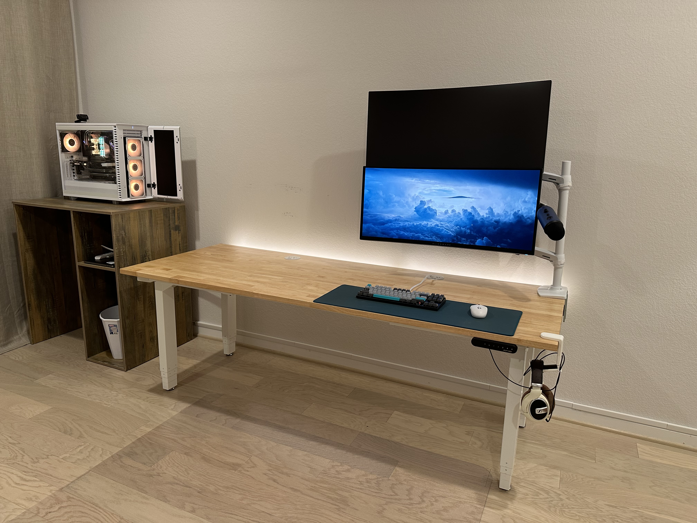

Hello, I'm Jarrod Cox, a Junior Site Reliability Engineer with an excellent ability to adapt to shifting priorities. I enjoy maintaining and optimizing environments, which is reflected in my work and office space! 
Seed Innovations | Junior SRE | 8/2021 - 4/2025
Cognitio Corp | Support Technician / Process Anchor | 9/2020 - 7/2021
Jump to top.